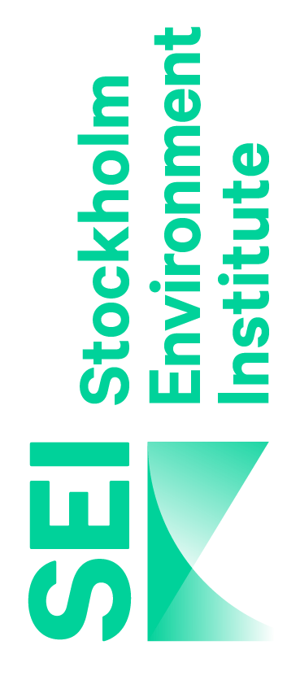
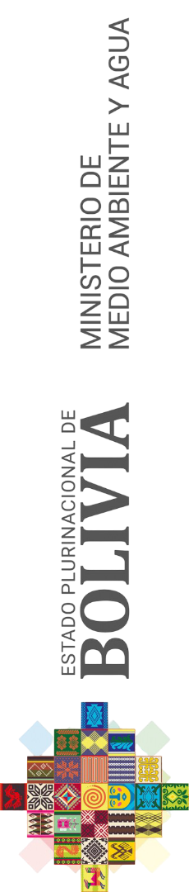

Bolivia WATCH trabaja para armar a las instituciones del país con la información y la capacidad para conectar dos esferas de formulación de políticas: saneamiento seguro y gestión de cuencas hidrográficas. En el marco del proyecto también se realizó la actualización del Balance Hídrico Nacional (2023).
El programa Bolivia WATCH apoyará los esfuerzos en curso de la Agencia Sueca de Cooperación Internacional para el Desarrollo (ASDI) para promover soluciones innovadoras de agua, saneamiento e higiene (WASH) y la implementación del Plan Nacional de Cuencas Hidrográficas de Bolivia.